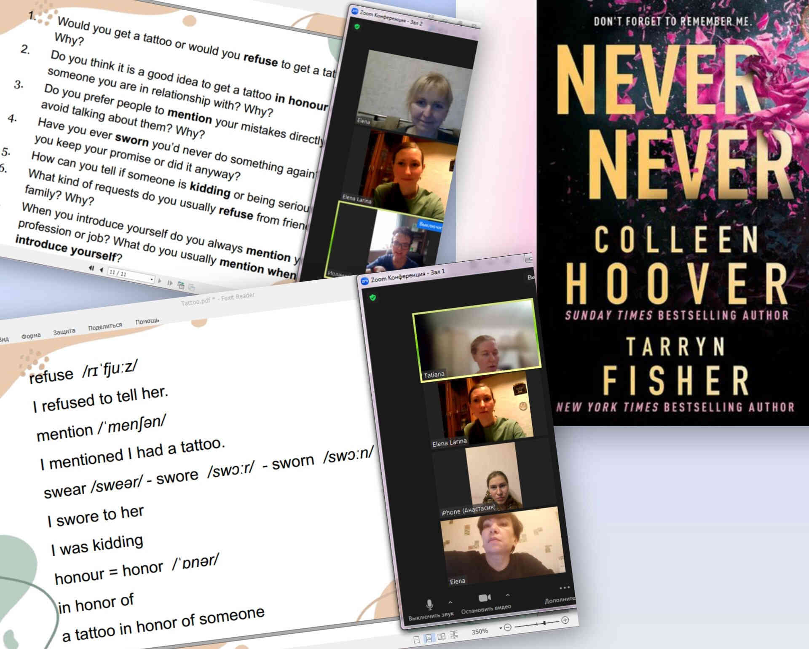
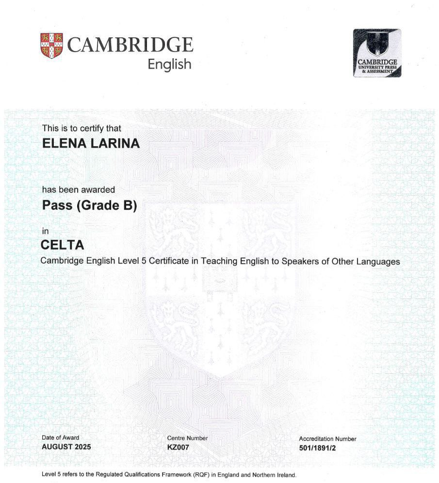

You know enough English to get by — but somewhere between the textbook and real life, something gets lost.
The Reading & Vocabulary Club is where that gap closes.
Every Sunday, a small group of adults meets on Zoom to read original texts, discover vocabulary worth using, and talk about things that genuinely interest them. Real books. Real topics. Real conversation.
No homework, no grammar tests, no pressure to be perfect — just a warm, curious group of people who show up every week because it actually feels good to learn this way.
How it works 📚
Each Sunday evening, a small group of participants gathers on Zoom to explore a text together — a passage from a book, a news article, or a short story — all in the original English. Here's what a typical meeting looks like:
- 📖 Read a carefully chosen excerpt aloud together
- 🔍 Pick out useful phrases and new vocabulary
- 🗣️ Discuss the topic using the new language in real conversation
- 🎯 Work on correct pronunciation along the way
Level: B1–B2 (Intermediate). Not sure about your level? Elena explains it simply: you can chat on everyday topics, understand most news and fiction, and actively express your opinion. If that sounds like you — come join!
Group size: 4 to 12 people. Registration is required so everyone feels comfortable. If your plans change, just let Elena know — no hard feelings.
What we read: Authentic, non-adapted materials — book excerpts, articles, short stories. Past topics include the psychology of color and light from Joyful by Ingrid Fetell Lee, fake news detection, sleep science from Matthew Walker's Why We Sleep, and even a special Women's Day session with Gloria Gaynor's lyrics. 🎶
Where we meet 🖥️

| Format | Platform | Day & Time |
|---|---|---|
| Online | Zoom (camera on) | Sundays at 20:00 MSK |
Meetings last around 60 minutes with a short break. No homework, no preparation required — just show up and practise. It's completely fine to make mistakes. That's the whole point.
All you need is a stable internet connection and a willingness to speak.
Pricing 💛
All sessions throughout 2026 are completely free 🎉 — no subscriptions, no trial periods, just genuine practice. Registration is still required so that everyone has a comfortable spot. Pricing for 2027 and beyond will be announced later.
Motivation is the main currency here. 😊
Your host 🌟

Helen — linguist, Cambridge CELTA-certified English teacher, and a genuine language enthusiast. She holds a Master's in Linguistics and has been teaching English for over 10 years — to children, students, and adults across all levels and backgrounds.
She learned grammar at school and spoken English in the US, where she spent a year on a scholarship she won at 16. Later she completed a training placement in the UK. That mix of rigour and real-life fluency is exactly what she brings to every session.
Her students have gone on to join international conferences, business trips abroad, and global teams. Among them: employees of General Motors, Club Med, BNP Paribas, Cartier, and other well-known companies. She combines grammar, pronunciation, and authentic materials — because for Helen, language only makes sense when it's actually spoken.
Join the club 🚀
Ready to practise your English in good company?
🔗 Telegram: t.me/readingandvocabularyclub
🔗 VK: vk.ru/lovelyeng
✍️ To register for a session: message @helen_9119 on Telegram or leave a comment in the channel
Schedules and upcoming topics are posted in the channel in advance. Once you've signed up for a session, just show up on time — and if your plans change, a quick message is all it takes. 🙌
What people say
I found this speaking club completely by chance, and I'm so happy I did. Elena is a fantastic professional. After just one hour, you leave the lesson having learned something new. And the class itself is always relaxed and friendly. I recommended the club to a friend of mine, and she joined too, moreover, she loves it too.
It was perfect. Everybody had a chance to speak in small groups. It had also interesting topic and this reason why it easy be involved in discuss.
We had a wonderful time — just over an hour of fun, warmth, and real learning.
Helen explains a few expressions from her prepared material, then steers us through some excellently chosen excerpts from real, unadapted texts. We read them aloud, paying close attention to correct pronunciation.
Going back over the new vocabulary through explanation rather than translation, Helen sets up mini-discussions and guided Q&A to put the expressions into active use.
To sum it up: a fun, low-pressure boost to your vocabulary, pronunciation, and reading skills, in a warm and welcoming atmosphere.